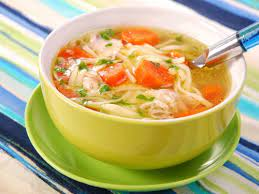

Supă Pui

Descriere:
Supa de pui este un preparat delicios, dar și un remediu excelent pentru gripă sau răceală. Un fel delicios și sățios de mancare, supa este adorată de copii şi ideală pentru consum în zilele reci, de toamnă târzie.
Vezi reţeta de supă de pui şi cât de simplu se prepară.
Ingrediente:
- 150 g fidea cu ou
- sare si piper
- cateva fire de marar
- 2 cartofi
- 2 morcovi
- 1 felie telina
- 4 pulpe de pui
Pași urmat:
- Pentru început, pulpele de pui se pun la fiert în apă cu sare şi se se spumează foarte bine de câte ori este cazul.
Când pulpele încep să fiarbă, vei observa că deasupra vasului se ridică spumă.
-
Între timp se pregătesc legumele pe care le vom adăuga în supa de pui.
Se taie cât mai mărunt cartofii, morcovii şi ţelina şi se adaugă în oala cu supă, dar doar după ce spuma nu se mai formează.
Se lasă totul la fiert până ce atât carnea, cât şi legumele sunt pătrunse.
-
Când toate legumele sunt bine fierte, în supa de pui se adaugă fideaua şi se acoperă vasul cu un capac.
Se lasă aşa timp de 10 minute, timp în care fideaua se înmoaie suficient.
-
Supa de pui este acum perfectă pentru servit. Deasupra se poate presăra verdeață proaspătă și se poate servi alături de un ardei